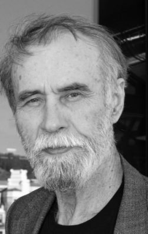

Vladimir Makanin (1937)
Hầm sâu hay một anh hùng của thời đại chúng ta (dựa theo tên một kiệt tác của Mikhail Lermontov năm 1840), tiểu thuyết mới nhất của Vladimir Makanin[1] đăng tải trong bốn kỳ của tạp chí văn học Znamia, đã được mọi người coi là sự kiện văn học của năm 1998. Tác phẩm đã khẳng định tác giả là một trong những nhân vật hàng đầu của văn chương Nga. Nên biết rằng dù đã viết từ hơn 30 năm nay, Makanin vẫn bị đứng bên lề. Thoạt tiên thì ông không được in chỉ vì không có chân trong một nhóm văn chương nào cả. Còn suốt 7 năm gần đây, các truyện của ông không hề được in thành tập. Ông hầu như không bao giờ trả lời báo chí. Nhưng bây giờ, Vladimir Makanin cuối cùng mới đạt được sự thừa nhận mà ông xứng đáng. Tính cách nhà văn đứng riêng rẽ của ông làm các nhà phê bình lúng túng ngay từ khi ông cho ra tác phẩm đầu tay, năm 1965. Không ủng hộ cũng không chống Xô-viết, không “thành thị” cũng không “tỉnh lẻ”, và không bao giờ ly khai, ông luôn luôn đi theo con đường riêng của mình. Trước đó, ông dạy ở Học viện văn học hoặc chăm lo nghiên cứu khoa học (ông là nhà toán học): Quyển sách đầu tiên của ông là một công trình khoa học. Lối viết của ông có sự tiến triển nhẹ nhàng nhưng luôn luôn là một thứ chủ nghĩa hiện thực truyền thống với bút pháp mang đậm tính thử nghiệm, kể cả thử nghiệm với thể loại khoa học viễn tưởng, để hôm nay kết tụ trong Hầm sâu, tổng hợp nhiều năm tìm tòi trong một tổng thể hoàn toàn lạ lùng, chói lọi, day dứt, tàn nhẫn, ghê sợ.
Rất hiếm tác giả đương đại biết đào sâu như Makanin cái vấn đề đột nhiên choán đầy tâm trí các nhà triết học và xã hội học thế kỷ XX này. Một vấn đề mà Jose Ortega gọi là Cuộc nổi dậy của đám đông (1930) và Marshall Mc Luhan gọi là “tính tập thể mới”, vấn đề lâu đời của nước Nga. Trải qua nhiều thế kỷ, con người cá nhân của Nga chỉ là một thành tố đơn giản của lịch sử hơn là một con người hành động tự do. Trong nhiều cuốn sách của Makanin như: Kẽ hở, Chủ để chuẩn, Những người im lặng, đám đông, bày cừu người, trở thành một kiểu nhân vật chính. Trong những nổ lực để thoát ra khỏi khuôn mẫu áp đặt, khỏi tình trạng phi nhân cách hóa, người anh hùng của Makanin tìm một lối thoát, một “kẽ hở” dẫn tới một thực tại khác.
Trong Kẽ hở, ông tìm thấy sự cứu rỗi ở một thế giới dưới lòng đất, một kiểu thiên đường ở chỗ mà người ta trông đợi gặp địa ngục. Các chuẩn mực bị lật nhào, những khái niệm quen thuộc được đặt lại từ đầu, giống như trong cái nước Nga thập niên gần đây đã trở thành một đất nước hoàn toàn mới mà người dân của nó chưa thể nhận thức được ngay. Niềm hy vọng đặt vào cái “ta” hùng mạnh và cứu tinh nhường chỗ cho ý thức về cái sự thực tàn nhẫn là không thể trông chờ bất kỳ sự giúp đỡ nào, thành hay bại chỉ phụ thuộc vào ý chí và trí tuệ của cá nhân. “Ở một thời đại nào đó, chính nghệ sĩ là những người phải chứng tỏ năng lực gìn giữ chủ nghĩa cá nhân của họ. Họ là những anh hùng của thời đại mà chúng tôi lớn lên. Ngày hôm nay, năng lực ấy được thử thách ở những anh hùng của thời đại mới - các doanh nhân”.
Nghệ sĩ và doanh nhân, thầy thuốc và sát thủ, người bệnh và người khỏe, đó là hàng chục, hàng trăm anh hùng của Hầm sâu, trong đó tác giả đã tổng hòa và tư duy lại toàn bộ kinh nghiệm của văn học Nga (Lermontov, Dostoievsky, Tchekhov) cùng với kinh nghiệm văn học của chính ông. Nếu trong Kẽ hở, nhân vật chính tìm được sự cứu rỗi trong một kiểu thành phố thần kỳ dưới đất, thì trong Một anh hùng của thời đại chúng ta, chính thực tại của chúng ta, đời sống hằng ngày của chúng ta được trình bày như một thế giới dưới mặt đất, thông qua con mắt một nhà văn đã vứt bỏ việc viết lách, trở thành người bảo vệ của một chung cư, một con người mang tên Petrovitch, sống bên lề, bị hắt hủi và không nhà cửa. Ông ta đã bị đẩy ra bên lề bởi những văn phiệt, những tên quan liêu đủ lốt, những láng giềng cáu kỉnh, nhưng cũng chính ông tự loại mình ra khỏi cuộc chơi. Bị văn chương xua đuổi, ông cảm thấy tự do.
Tại sao Petrovitch, mà ai cũng coi là con người lương thiện, lại đột nhiên “ám sát” một viên cảnh sát “trong tư tưởng”? Rồi tại sao ông ta lại thình lình giết, và lần này thì giết thực sự, một người gốc Kavcaz? Chính ông chẳng hiểu gì cả. Một cuộc gây lộn giữa hai tên say khướt, một đêm, trên một chiếc ghế băng, những con dao rút ra, và thế là… Trong tư tưởng, ông ta nghĩ đến Raskolnikov (nhân vật chính của Tội ác và hình phạt của Dostoievsky), theo truyền thống nhân văn của văn học Nga, nhưng lương tâm không hề dày vò ông: Ông đã giết, chỉ có thế. Điều cốt yếu là thoát khỏi các nhà điều tra. Tội tiếp sau của ông thì có tính toán: Ông giết một tên chỉ điểm. Và việc này cũng chẳng tác động gì đến ông. Cái “tôi” thứ hai của ông là một con thú, trong mắt ông người ta không đọc thấy nỗi sợ mà là sự vĩnh hằng, nỗi khát khao bất tử, và “nếu sự bất tử mà chấm hết thì tất cả đều được phép”. Khủng khiếp. Người anh hùng của Dostoievsky khẳng định: “Nếu Thượng đế không tồn tại thi tất cả đều được phép”. Người anh hùng mới của thế kỷ XX sắp chấm dứt cho rằng “hối hận là chấm hết”. Căn hầm mới, “underground”, chính là “vô thức của nước Nga”, của xã hội hiện thời.
Không phải lương tâm hành hạ người anh hùng của chúng ta, mà tất cả những gì ông đã không diễn đạt. Vì ông vẫn cứ là nhà văn. Và chính nhờ ngôn từ, nhờ một tiếng kêu khủng khiếp, thú vật, mà con người bị rơi xuống đáy đã dần dà khôi phục lại nhân cách đích thực của mình, một cách đau đớn. Từ lâu bị giới phê bình chê trách là tàn nhẫn, Makanin là kẻ không biết thương hại. Ông dường như muốn bắt Petrovitch phải chịu tất cả những tủi nhục có thể có và có thể hình dung.
Sợi chỉ đỏ của cuốn sách được thể hiện ở người em trai của Petrovitch. Venedikt là một họa sĩ rất tài năng, xưa kia đã bị KGB nghiến nát và gần như bị tiêu diệt trong một trại tâm thần. Trong suốt hàng chục năm, Petrovitch đi thăm ông ở bệnh viện và là mối dây duy nhất, mỏng mảnh, nối kết ông với quá khứ và hiện tại. Sau khi đã trải hết “lò luyện ngục riêng” của mình, người anh mời Venia về nhà, tìm hết cách để đưa ông trở lại đời sống. Nhưng Petrovitch đã thất bại. Venia trở lại bệnh viện y như lúc ông từ đó ra, đáng thương, bất lực, nhưng dẫu sao cũng có một chút tiến bộ: Ông xô các y tá ra, “bình thản nói với họ, như thể nói lời cuối cùng: Đừng làm tôi giật mình, để cho tôi làm”.
Chẳng phải vô cớ mà câu để cho tôi làm được in nghiêng trong câu cuối của cuốn sách: Nó là lời của nhân vật cũng như của chính tác giả.
THUẬN THIÊN